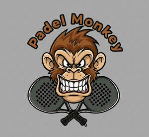

Trade Mark Journal No.2025/042 17 October 2025
UK00004263773 14 September 2025 (18,25,28)

- Class 18
- Sport bags; Sports bags; Bags for sports; Bags for sports clothing; All-purpose sports bags; All purpose sport bags; Athletics bags; General purpose sport trolley bags; Athletic bags; Duffle bags; Holdalls for sports clothing; Duffel bags; Sports [Bags for -]; All purpose sports bags; Gym bags; Duffel bags for travel; Tote bags; Shoe bags; Leather shopping bags; Carry-all bags; Sports packs; Crossbody bags; Cross-body bags; Leather bags; All-purpose athletic bags; Drawstring bags; Toiletry bags; Mesh shopping bags; Mesh bags for shopping; Kit bags; Carry-on bags; Two-wheeled shopping bags; Knitting bags; Tool bags of leather, empty; Bucket bags; Canvas bags; Leather bags and wallets; Bags for school; School bags; Boot bags; Music bags; Shoulder bags; Waterproof bags; Bags for travel.
- Class 25
- Clothing; Knitwear [clothing]; Jackets [clothing]; Ready-to-wear clothing; Woolen clothing; Layettes [clothing]; Garments for protecting clothing; Clothing layettes; Linen clothing; Headbands for clothing; Headbands [clothing]; Gloves [clothing]; Gloves as clothing; Clothes; Aprons [clothing]; Kerchiefs [clothing]; Jerseys [clothing]; Denims [clothing]; Shorts [clothing]; Cashmere clothing; Silk clothing; Leather clothing; Clothing of leather; Leather (Clothing of -); Collars [clothing]; Parts of clothing, footwear and headgear; Knitted clothing; Windproof clothing; Hoods [clothing]; Embroidered clothing; Wristbands [clothing]; Bandeaux [clothing]; Waterproof clothing; Rainproof clothing; Casual clothing; Visors [clothing]; Jackets being sports clothing; Jackets (Stuff -) [clothing]; Stuff jackets [clothing]; Ready-made clothing; Bottoms [clothing]; Playsuits [clothing]; Clothing for leisure wear; Latex clothing; Trunks being clothing; Infant clothing; Woven clothing; Clothing for sports; Sports clothing; Ties [clothing]; Leisure clothing; Drawers [clothing]; Drawers as clothing; Athletic clothing; Clothing for children; Muffs [clothing]; Clothing for babies; Bodies [clothing]; Tops [clothing]; Clothing for infants; Weatherproof clothing; Water-resistant clothing; Pockets for clothing; Triathlon clothing; Handwarmers [clothing]; Beach clothing; Thermal clothing; Cowls [clothing]; Men's clothing; Mitts [clothing]; Sportswear; Casualwear; Footwear for sports; Sports footwear; Shoes for leisurewear; Sports garments; Footwear for sport; Footwear for use in sport; Athletic footwear; Menswear; Athletics footwear; Leisurewear; Footwear; Leisure footwear; Sneakers [footwear]; Gymwear; Outerwear; Sports clothing [other than golf gloves]; Gloves for apparel; Casual footwear; Moisture-wicking sports shirts; Surfwear; Clothes for sports; Footwear for women; Footwear for men; Sports shirts; Clothes for sport; Sportswear incorporating digital sensors; Beach footwear; Sport shirts; Knitwear; Swimwear; Footwear not for sports; Trainers [footwear]; Moisture-wicking sports pants; Beachwear; Men's underwear; Sports jackets; Sports shoes; Jogging bottoms [clothing]; Articles of sports clothing; Quilted jackets [clothing]; Tennis pullovers; Loungewear; Jogging sets [clothing]; Rainwear; Sport shoes; Tennis shirts; Foulards [clothing articles]; Sports pants; Moisture-wicking sports bras; Sports jerseys and breeches for sports; Tracksuits; Insoles for footwear; Footwear soles; Soles for footwear; Flip-flops for use as footwear; Footwear uppers; Uppers (Footwear -); Pumps [footwear]; Rubbers [footwear]; Insoles [for shoes and boots]; Insoles for shoes and boots; Tips for footwear; Footwear (Tips for -); Shoes; Children's footwear; Welts for footwear; Footwear (Welts for -); Inner socks for footwear; Non-slipping devices for footwear; Shoe soles; Infants' footwear; Ladies' footwear; Slip-on shoes; Sneakers; Snowboard shoes; Leather shoes; Esparto shoes or sandals; Athletic shoes; Waterproof shoes; Traction attachments for footwear; Leisure shoes; Shoes soles for repair; Footwear for men and women; Esparto shoes or sandles; Sandals and beach shoes; Tongues for shoes and boots; Athletics shoes; Skiing shoes; Footwear made of vinyl; Rubber shoes; Tennis shoes; Soccer shoes; Gymnastic shoes; Pullstraps for shoes and boots; Shoe uppers; Yoga shoes; Shoes for casual wear; Boots for sports; Jogging shoes; Rugby shoes; Boots for sport; Sport coats; Sport stockings; Hunting boot bags; Ski boot bags; Sports vests.
- Class 28
- Sports equipment; Sports equipment for pets; Football equipment; Sporting articles and equipment; Hydrofoils for sports equipment boards; Badminton equipment; Sports training apparatus; Swimming equipment; Skateboards [recreational equipment]; Bags specially adapted for sports equipment; Gloves for sports; Billiard equipment; Sleighs [recreational equipment]; Fencing equipment; Harnesses for use in sports; Guns (Paintball -) [sports apparatus]; Paintball guns [sports apparatus]; Paintballs [sports apparatus]; Nets for sports; Sports games; Sleds being sports articles; Racketball racket strings; Squash racket strings; Rackets; Tennis racket covers; Racket cases; Squash racket covers; Balls for racket sports; Racket grip tapes; Racket covers; Racket cases [for tennis or badminton]; Racket grip tape; Rackets [for tennis]; Badminton rackets; Racketball rackets; Strings for tennis rackets; Strings for badminton rackets; Squash rackets; Vibration dampeners for tennis rackets; Strings for rackets; Rackets (Strings for -); Gut for tennis rackets; Grip bands for badminton rackets; Grip bands for tennis rackets; Guts for rackets [for tennis or badminton]; Grip bands for squash rackets; Guts for rackets; Lawn tennis rackets; Gut for rackets; Synthetic strings for use with rackets; Grips for rackets; Tapes for rackets; Head covers for squash rackets; Table tennis racket covers (Shaped -); Tennis bags shaped to contain a racket; Natural gut strings for tennis rackets; Strings for tennis racquets; Racquet strings; Natural gut strings for squash rackets; Shaped covers for racketball rackets; Covers (Shaped -) for badminton rackets; Shaped covers for tennis rackets; Racquet ball nets; Racquets; Shaped covers for squash rackets; Strings for racquets; Racquet ball gloves; Grip tape for racquets; Lawn tennis racquets; Natural gut strings for tennis racquets; Protective covers for rackets; Tapes for wrapping tennis racquet handle grips; String materials for sporting racquets; Grip bands for table tennis bats; Gut for racquets; Covers (Shaped -) for squash racquets; Racketball balls; Tennis balls; Soft tennis balls; Balls for playing racketball; Cases for tennis balls; Tennis nets; Balls for playing platform tennis; Nets for badminton; Platform tennis balls; Fitted protective covers specially adapted for tennis rackets; Squash balls; Grip balls in the nature of rubber ball for hand exercise; Table tennis balls; Tennis balls [not soft]; Grip tapes for golf clubs; Table tennis nets; Platform tennis nets; Tennis net centre straps; Balls for playing paddleball; Table tennis bats; Grip tapes for baseball bats; Paddles for playing platform tennis; Sport balls; Table tennis trainers with elastic soft shafts ; Coverings for table tennis bats; Tennis ball retrievers; Balls for playing sports; Rubber balls; Ball nets; Nets for practising golf; Golf balls; Playground balls; Badminton sets; Table tennis paddle cases; Lacrosse stick strings; Billiard balls; Table tennis paddles; Golf practice nets; Platform tennis paddles; Billiard ball racks; Golf bag tags of leather; Golf bags; Golf bag tags; Golf bag trolleys; Golf club bags; Golf bag carts; Soccer ball bags; Bowling bags; Bags adapted to carry sports implements; Stands for golf bags; Ski bags; Sport hoops; Bags adapted for carrying sporting articles; Caddie bags for golf clubs; Bags adapted for sporting articles; Chest protectors adapted for playing the sport of taekwondo; Bean bag animals; Cricket bags [adapted]; Golf tee bags; Golf bags with or without wheels; Balls for sports; Sports balls; Punching bags; Fishing tackle bags; Covers (Shaped -) for golf bags; Inflatable punching bags; Bowling bags (adapted); Golf bags, with or without wheels; Bean bag dolls.
Brett Davidson